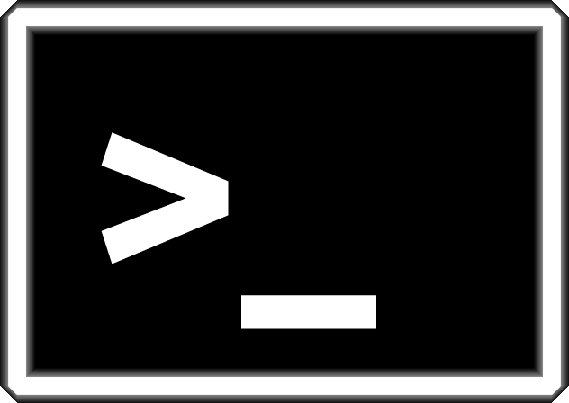

user@machine:~$
bash-4.1$

$ pwd
$ ls
$ cd
man nome_do_programa
$ man ls
$ whatis ls
/etc/fstab
~/Downloads/ficheiro.txt
Downloads/ficheiro.txt
./ficheiro.txt
/home/francisco$ mkdir dir_name
$ rmdir dir_name
$ touch file_name
$ cp origem destino
$ mv origem destino
$ rm file_name
drwxr-xr-x 5 francisco francisco 4096 Oct 22 00:24 Desktop
drwxr-xr-x 3 francisco cobig2 4096 2013-05-20 13:55 Databases
-rw-r--r-- 1 francisco francisco 4256 Sep 15 2011 Zkill.py
$ groups
$ chown user:group ficheiro
$ chmod mode ficheiro
5 - read&execute (4+1)
6 - read&write (4+2)
7 - read,write&execute (4+2+1)
777 ou 755 ou 640
$ chmod +x ficheiro
$ chmod o-w ficheiro
env vars1 i="ola"
2 echo $i
3 echo $USER
4 echo $HOME
1 alias ll=ls -l
2 ll
~/.bashrc|1 du -sm *
2 du -sm *| sort -rk 2
3 du -sm *| sort -n
$ echo $PATH
$ ~/cool_stuff/o_meu_programa
$ cd ~/cool_stuff
$ ./o_meu_programa
env vars?$ echo $PATH
$ PATH=$PATH:~/bin
$ echo $PATH
~/.bashrc !$ ls -l
$ cp origem destino
$ cp --help
ficheiro com espacos.fasta".$ cat ficheiro\ com\ espacos.fasta
$ cat "ficheiro com espacos.fasta"
grep sed cat less vim nano git$ cat ficheiro.fasta
$ grep ">" ficheiro.fasta
$ sed 's/>/+/g' ficheiro.fasta
$ less ficheiro.fasta
lessvim dava sozinho para mais que uma so aula.$ nano ficheiro.fasta
git sozinho dava para uma cadeira.$ ls D*
$ cp *.fasta outro/diretorio/qualquer
$ ls -l > ficheiro.txt - cria um fichiero novo e escreve lá$ ls -l >> ficheiro.txt - começa a escrever no final do ficheiro$ cat ficheiro.fasta | grep ">" > nomes_das_sequencias.txt$ cat ficheiro.fasta |grep ">" | sed 's/>//g' > nomes_das_sequencias2.txtssh$ ssh user@machine
scp$ scp user@machine:caminho/para/ficheiro caminho/local
$ wget http://exemplo.com/ficheiro_fixe.txt
curl:$ wget http://odin.fc.ul.pt/bcg/exemplos/sequencias.fasta
$ curl http://odin.fc.ul.pt/bcg/exemplos/sequencias.fasta > sequencias.fasta
$ unzip ficheiro.zip
$ tar xvfz ficheiro.tar.gz
$ tar xvfj ficheiro.tar.bz2
4.Descarregem a(s) lista(s) para o vosso PC.
ssh, grep, sed, wc, (paste), scp, sort| Table of Contents | t |
|---|---|
| Exposé | ESC |
| Full screen slides | e |
| Presenter View | p |
| Source Files | s |
| Slide Numbers | n |
| Toggle screen blanking | b |
| Show/hide slide context | c |
| Notes | 2 |
| Help | h |